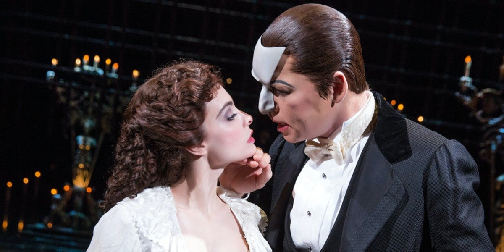

The Phantom of
the Opera
The Phantom of the Opera is a musical with music by Andrew Lloyd Webber
(who co-wrote the libretto alongside Richard Stilgoe) and lyrics by Charles Hart.
It is based on the 1910 eponymous French novel by Gaston Leroux.
The plot revolves around a beautiful soprano, Christine Daaé, who becomes the
obsession of a mysterious, masked musical genius living in the subterranean
labyrinth beneath the Paris Opéra House.